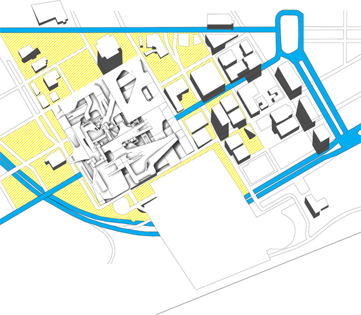
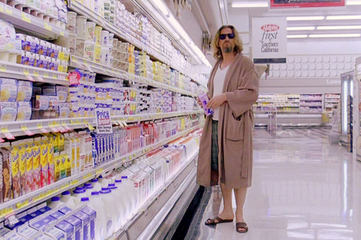
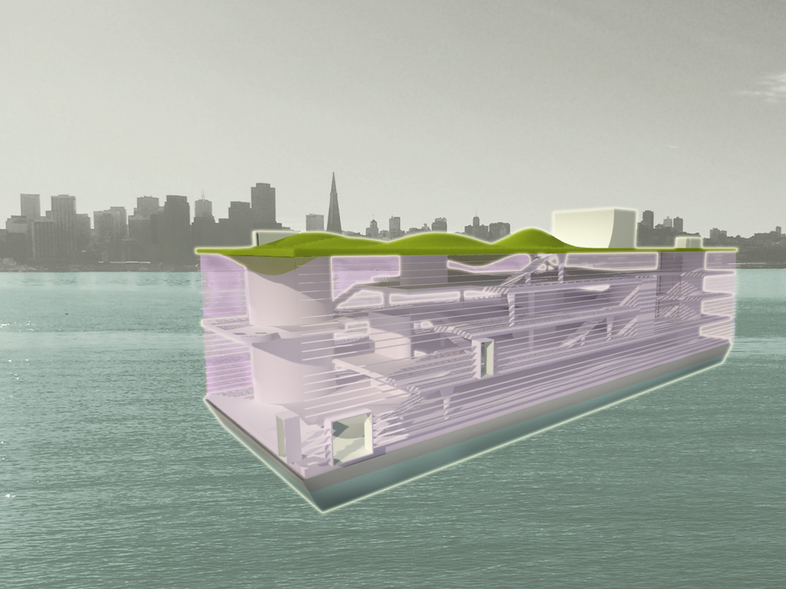

There is something pleasant about being able to customize your user experience on the internet.
And there is something engaging about being able to connect with your friends though your
phone. The interactions and networks we build for ourselves in the digital realm is rewarding
because it is real and transcends the digital experience. How can these qualities be extended
into architecture? Architecture is currently bound experientially to one place. It is mostly static and does not beg to be engaged. It lacks the ability to provide feedback and response. Through
design, the engaging qualities of the digital experience can be integrated into architecture to
provide a more interactive architectural experience. By producing spatial effects specific to the
user's (occupant) preferences and their network of stimuli, architecture provide a greater
integrated/networked living experience. These effects should be in response to both local and
remote conditions. Elements like view, lighting and visual cues can be controlled to create these
spatial effects, but first they must be designed to be variable.
The project proposed here is a residential tower in Singapore that is designed with this new
interactive architecture. It features a dynamic facade system that regulates daylight and view.
Additionally, each unit has a pixelated lighting system that augments spacial occupancy and
atmospheric qualities. These systems both allow the user to customize their living experience as
well as their extended network produce modifications too. The configuration of the tower
maximizes the variable qualities of the spaces. With only three to four units per floor, residents
are able have a wider potential for view. And by using a diagrid tube structural system, the plans
are able to be column free.
WHAT
EVERYTHING is an exhibition featuring the undergraduate thesis work of Jackson Studio. The projects each have a unique focus, but all are united in their ambition to re-frame the physical world as a place of augmented experience, in accord with aspects of contemporary culture that the architectural discipline has so far failed to adequately address.
Each thesis is therefore framed as a challenge to existing practices, and an argument for and demonstration of a new approach to architecture.
WHY
The studio's general interest in architecture's nature as an immersive, augmented reality is reflected in the design of the exhibition itself: the content of each thesis project is presented as a series of interactive layers, and the physical infrastructure of the show provides the interface for exploring and interacting with these various layers of content.